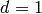
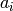
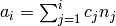
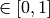
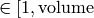
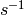

Reference¶
Data Types¶
kmos.types¶
Holds all the data models used in kmos.
- class kmos.types.Project¶
A Project is where (almost) everything comes together. A Project holds all other elements needed to describe one kMC Project ready to be manipulated, exported, or imported.
The overall structure is the following as is also displayed in the editor GUI.
Project:
- Meta - Parameters - Lattice(s) - Species - Processes
- Project.export_xml_file(filename)¶
- class kmos.types.Meta(*args, **kwargs)¶
Class holding the meta-information about the kMC project
- class kmos.types.Parameter(**kwargs)¶
A parameter that can be used in a rate constant expression and defined via some init file
- class kmos.types.Layer(**kwargs)¶
Represents one layer in a possibly multi-layer geometry
- class kmos.types.Site(**kwargs)¶
Represents one lattice site.
- class kmos.types.Species(**kwargs)¶
Class that represent a species such as oxygen, empty, ... . Note: empty is treated just like a species.
s = Species; print(s.attributes)
- class kmos.types.Process(**kwargs)¶
One process in a kMC process list
- class kmos.types.ConditionAction(**kwargs)¶
Represents either a condition or an action. Since both have the same attributes we use the same class here, and just store them in different lists, depending on its role.
- class kmos.types.Coord(**kwargs)¶
Class that holds exactly one coordinate as used in the description of a process. The distinction between a Coord and a Site may seem superfluous but it is made to avoid data duplication.
kmos.io¶
Features front-end import/export functions for kMC Projects. Currently import and export is supported to XML and export is supported to Fortran 90 source code.
- kmos.io.export_source(project_tree, export_dir=None)¶
Export a kmos project into Fortran 90 code that can be readily compiled using f2py. The model contained in project_tree will be stored under the directory export_dir. export_dir will be created if it does not exist. The XML representation of the model will be included in the kmc_settings.py module.
- kmos.io.import_xml(filename)¶
Imports and returns project from an XML file.
- kmos.io.export_xml(project_tree, filename=None)¶
Writes a project to an XML file.
Editor frontend¶
kmos.gui¶
A GUI frontend to create and edit kMC models.
- class kmos.gui.Editor¶
- class kmos.gui.GTKProject(parent, menubar)¶
A facade of kmos.types.Project so that pygtk can display in a TreeView.
kmos.forms¶
kmos.forms - GUI forms used by kmos.gui The classes defined here heavily draw on the interface provided by python-kiwi. In the language of underlying MVC (Model-View-Controller) pattern these classes form the controller. The view is defined through a .glade XML file and the models are instances of kmos.types.
- class kmos.forms.MetaForm(model, project_tree)¶
Allows to enter meta information about the project. Please enter author and email so people can credit you for the model.
Increasing the debug level makes the kmos backed create a lot of output but is typically not needed.
- class kmos.forms.SpeciesListForm(model, project_tree)¶
Allows to set the default species, i. e. the system will be globally initialized with this species if nothing else is set on a per site basis.
- class kmos.forms.SpeciesForm(model, project_tree)¶
Allows to define a new species. Required attribute is name. The chosen color will only shop up in the process editor. So choose something you will remember and recognize. The representation string is meant to be a ASE ase.atoms.Atoms constructor that will show up in the ASE visualization.
- class kmos.forms.ParameterForm(model, project_tree)¶
Allows to set parameter. These parameters can be used in e.g. Transition State Theory formula to calculate rate constants.
If ‘adjustable’ is activated then they maybe be changed via the kmos view front end while watching the model run.
- class kmos.forms.LatticeForm(model, dimension, project_tree)¶
Allows to set global lattice parameter such as the lattice vector, a ASE representation string, and the default layer. The program will be initialized using the default layer.
- class kmos.forms.LayerEditor(model, project_tree)¶
Widget to define a lattice through the sites in the unit cell (i.e. the basis in solid state language).
- class kmos.forms.SiteForm(site, parent, project_tree, layer)¶
Allows to create or modify a site when setting up a unit cell.
- on_site_cancel__clicked(_)¶
If we click cancel revert to previous state or don’t add site, if new.
- on_site_name__validate(widget, site_name)¶
check if other site already has the name
- class kmos.forms.ProcessForm(process, project_tree)¶
Allows to create and manipulate a process by dragging species onto respective sites. The the lower species represents a condition the upper one an action.
Rate constants can be entered directly using all defined parameters. The tooltip shows the current value if all is entered correctly.
- draw_from_data()¶
Places circles on the current lattice according to the conditions and actions defined
- on_lattice(x, y)¶
Returns True if (x, y) is in lattice box
- kmos.forms.parse_chemical_expression(eq, process, project_tree)¶
Evaluates a chemical expression ‘eq’ and adds conditions and actions accordingly. Rules are:
- each chemical expression has the form
conditions -> actions
each condition or action term has the form (regex) [$^]*SPECIES@SITE.OFFSET.LAYER
each SPECIES must have been defined before. The special species ‘empty’ exists by default
each SITE must have been defined before via the layer form
an offset in units of units cell can be given as tuple such as ‘(0,0)’
a condition or action term containing the default species, i.e. by default ‘empty’ may be omitted. However a term containing the omitted site and a species other then the default must exist on the opposite side of the expression
^ and $ are special prefixes for the ‘creation’ and ‘annihilation’ of a site, respectively. In case of ‘$’
the species can be always omitted. In case of ^ the default species may be omitted. Creation and annihilation is only needed for lattice reconstructions/multi-lattice models and they only stand on the right-hand (i.e. action) side of the expression
white spaces may be used for readability but have no effect
- Examples::
- oxygen@cus -> oxygen@bridge #diffusion
- co@bridge -> co@cus.(-1,0) # diffusion
- -> oxygen@cus + oxygen@bridge # adsorption
- oxygen@cus + co@bridge -> # reaction
- class kmos.forms.BatchProcessForm(project_tree)¶
Allows to enter many processes at once. The format is one process per line in the form:
[process name] ; [chemical expression] ; [rate constant]
One can omit the fields but not the semicolon.
Runtime frontend¶
kmos.run¶
A front-end module to run a compiled kMC model. The actual model is imported in kmc_model.so and all parameters are stored in kmc_settings.py.
The model can be used directly like so:
from kmos.model import KMC_Model
model = KMC_Model()
model.parameters.T = 500
model.do_steps(100000)
model.view()
which, of course can also be part of a python script.
The model can also be run in a different process using the multiprocessing module. This mode is designed for use with a GUI so that the CPU intensive kMC integration can run at full throttle without impeding the front-end. Interaction with the model happens through Queues.
- class kmos.run.KMC_Model(image_queue=None, parameter_queue=None, signal_queue=None, size=None, system_name='kmc_model', banner=True, print_rates=True, autosend=True)¶
API Front-end to initialize and run a kMC model using python bindings. Depending on the constructor cal the model can be run either via directory calls or in a separate processes access via multiprocessing.Queues. Only one model instance can exist simultaneously per process.
- deallocate()¶
Deallocate all arrays that are allocated by the Fortran module. This needs to be called whenever more than one simulation is started from one process.
Note that the currenty state and history of the system is lost after calling this method.
Note: explicit invocation was chosen over the __del__ method because there seems to easy portable way to control garbage collection.
- do_steps(n=10000)¶
Propagate the model n steps.
- double()¶
Double the size of the model in each direction and initialize larger model with current configuration in each copy.
- get_atoms(geometry=True)¶
Return an ASE Atoms object with additional information such as coverage and Turn-over-frequencies attached.
- get_occupation_header()¶
Returns the names of the fields returned by self.get_atoms().occupation. Useful for the header line of an ASCII output.
- get_tof_header()¶
Returns the names of the fields returned by self.get_atoms().tof_data. Useful for the header line of an ASCII output.
- halve()¶
Halve the size of the model and initialize each site in the new model with a species randomly drawn from the sites that are reduced onto one. It is necessary that the simulation size is even
- post_mortem(steps=None, propagate=False, err_code=None)¶
Accepts an integer and generates a post-mortem report by running that many steps and returning which process would be executed next without executing it.
- put(site, species)¶
Puts a certain species at a certain site. (Not implemented)
- run()¶
Runs the model indefinitely. To control the simulations, model must have been initialized with proper Queues.
- start()¶
Start child process
- view()¶
Visualize the current configuration of the model using ASE ag.
- xml()¶
Returns the XML representation that this model was created from.
- _get_configuration()¶
Return current configuration of model.
- _set_configuration(config)¶
Set the current lattice configuration.
Expects a 4-dimensional array, with dimensions [X, Y, Z, N] where X, Y, Z are the lattice size and N the number of sites in each unit cell.
kmos kMC project DTD¶
The central storage and exchange format is XML. XML was chosen over JSON, pickle or alike because it still seems as the most flexible and universal format with good methods to define the overall structure of the data.
One way to define an XML format is by using a document type description (DTD) and in fact at every import a kmos file is validated against the DTD below.
<!ELEMENT kmc (meta?,species_list?,parameter_list?, lattice, process_list?,output_list?)>
<!ATTLIST kmc
version CDATA #REQUIRED
>
<!ELEMENT meta EMPTY>
<!ATTLIST meta
author CDATA #IMPLIED
debug CDATA #IMPLIED
email CDATA #IMPLIED
model_dimension CDATA #IMPLIED
model_name CDATA #IMPLIED
>
<!ELEMENT species_list (species)*>
<!ATTLIST species_list
default_species CDATA #IMPLIED
>
<!ELEMENT species EMPTY>
<!ATTLIST species
name CDATA #REQUIRED
color CDATA #IMPLIED
representation CDATA #IMPLIED
>
<!ELEMENT parameter_list (parameter)*>
<!ELEMENT parameter EMPTY>
<!ATTLIST parameter
name CDATA #REQUIRED
value CDATA #IMPLIED
adjustable CDATA #IMPLIED
min CDATA #IMPLIED
max CDATA #IMPLIED
scale CDATA #IMPLIED
>
<!ELEMENT lattice (layer)*>
<!ATTLIST lattice
cell_size CDATA #REQUIRED
default_layer CDATA #REQUIRED
substrate_layer CDATA #IMPLIED
representation CDATA #IMPLIED
>
<!ELEMENT layer (site)*>
<!ATTLIST layer
name CDATA #REQUIRED
grid CDATA #IMPLIED
grid_offset CDATA #IMPLIED
color CDATA #IMPLIED
>
<!ELEMENT site EMPTY>
<!ATTLIST site
pos CDATA #REQUIRED
type CDATA #REQUIRED
tags CDATA #IMPLIED
default_species CDATA #IMPLIED
>
<!ELEMENT process_list (process)*>
<!ELEMENT process (condition|action)*>
<!ATTLIST process
name CDATA #REQUIRED
rate_constant CDATA #REQUIRED
enabled CDATA #IMPLIED
tof_count CDATA #IMPLIED
>
<!ELEMENT condition EMPTY>
<!ATTLIST condition
coord_name CDATA #REQUIRED
coord_layer CDATA #REQUIRED
coord_offset CDATA #REQUIRED
species CDATA #REQUIRED
>
<!ELEMENT action EMPTY>
<!ATTLIST action
coord_name CDATA #REQUIRED
coord_layer CDATA #REQUIRED
coord_offset CDATA #REQUIRED
species CDATA #REQUIRED
>
<!ELEMENT output_list (output)*>
<!ELEMENT output EMPTY>
<!ATTLIST output
item CDATA #REQUIRED
>
Backend¶
In general the backend includes all functions that are implemented in Fortran90, which therefore should not have to be changed by hand often. The backend is divided into three modules, which import each other in the following way
base <- lattice <- proclist
The key for this division is reusability of the code. The base module implement all aspects of the kMC code, which do not depend on the described model. Thus it “never” has to change. The latttice module basically repeats all methods of the base model in terms of lattice coordinates. Thus the lattice module only changes, when the geometry of the model changes, e.g. when you add or delete sites. The proclist module implements the process list, that is the species or states each site can have and the elementary steps. Typically that changes most often while developing a model.
The rate constants and physical parameters of the system are not implemented in the backend at all, since in the physical sense they are too high-level to justify encoding and compilation at the Fortran level and so they are typical read and parsed from a python script.
The kmos.run.KMC_Model class implements a convenient interface for most of these functions, however all public methods (in Fortran called subroutines) and variables can also be accessed directly like so
from kmos.run import KMC_Model
model = KMC_Model(print_rates=False, banner=False)
model.base.<TAB>
model.lattice.<TAB>
model.proclist.<TAB>
which works best in conjunction with ipython.
kmos/base¶
The base kMC module, which implements the kMC method on a  lattice. Virtually any lattice kMC model can be build on top of this. The methods offered are:
- de/allocation of memory
- book-keeping of the lattice configuration and all available processes
- updating and tracking kMC time, kMC step and wall time
- saving and reloading the current state
- determine the process and site to be executed
base/accum_rates¶
Stores the accumulated rate constant multiplied with the number of sites available for that process to be used by determine_procsite. Let be the rate constants the number of available sites, and the accumulated rates, then  is calculated according to .
base/add_proc¶
The main idea of this subroutine is described in del_proc. Adding one process to one capability is programmatically simpler since we can just add it to the end of the respective array in avail_sites.
- proc positive integer number that represents the process to be added.
- site positive integer number that represents the site to be manipulated
base/allocate_system¶
Allocates all book-keeping structures and stores local copies of system name and size(s):
- systen_name identifier of this simulation, used as name of punch file
- volume the total number of sites
- nr_of_proc the total number of processes
base/assertion_fail¶
Function that shall be used by all parts of the program to print a proper message in case some assertion fails.
- a condition that is supposed to hold true
- r message that is printed to the poor user in case it fails
base/avail_sites¶
Main book-keeping array that stores for each process the sites that are available and for each site the address in this very array. The meaning of the fields are:
avail_sites(proc, field, switch)where:
- proc – refers to a process in the process list
- the field within the process, but the meaning differs as explained under ‘switch’
- switch – can be either 1 or 2 and switches between (1) the actual numbers of the sites, which are available and filled in from the left but in whatever order they come or (2) the location where the site is stored in (1).
base/can_do¶
Returns true if ‘site’ can do ‘proc’ right now
- proc integer representing the requested process.
- site integer representing the requested site.
- can writeable boolean, where the result will be stored.
base/deallocate_system¶
Deallocate all allocatable arrays: avail_sites, lattice, rates, accum_rates, procstat.
none
base/del_proc¶
del_proc delete one process from the main book-keeping array avail_sites. These book-keeping operations happen in O(1) time with the help of some more book-keeping overhead. avail_sites stores for each process all sites that are available. The array for each process is filled from the left, but sites generally not ordered. With this determine_procsite can effectively pick the next site and process. On the other hand a second array (avail_sites(:,:,2) ) holds for each process and each site, the location where it is stored in avail_site(:,:,1). If a site needs to be removed this subroutine first looks up the location via avail_sites(:,:,1) and replaces it with the site that is stored as the last element for this process.
- proc positive integer that states the process
- site positive integer that encodes the site to be manipulated
base/determine_procsite¶
Expects two random numbers between 0 and 1 and determines the corresponding process and site from accum_rates and avail_sites. Technically one random number would be sufficient but to circumvent issues with wrong interval_search_real implementation or rounding errors I decided to take two random numbers:
- ran_proc Random real number from  that selects the next process
- ran_site Random real number from that selects the next site
- proc Return integer
- site Return integer 
base/get_kmc_step¶
Return the current kmc_step
- kmc_step Writeable integer
base/get_kmc_time¶
Returns current kmc_time as rdouble real as defined in kind_values.f90.
- return_kmc_time writeable real, where the kmc_time will be stored.
base/get_kmc_time_step¶
Returns current kmc_time_step (the time increment).
- return_kmc_step writeable real, where the kmc_time_step will be stored.
base/get_kmc_volume¶
Return the total number of sites.
- volume Writeable integer.
base/get_nrofsites¶
Return how many sites are available for a certain process. Usually used for debugging
- proc integer representing the requested process
- return_nrofsites writeable integer, where nr of sites gets stored
base/get_procstat¶
Return process counter for process proc as integer.
- proc integer representing the requested process.
- return_procstat writeable integer, where the process counter will be stored.
base/get_rate¶
Return rate of given process.
- proc_nr integer representing the requested process.
- return_rate writeable real, where the requested rate will be stored.
base/get_species¶
Return the species that occupies site.
- site integer representing the site
base/get_system_name¶
Returns the systems name, that was specified with base/allocate_system
- system_name Writeable string of type character(len=200).
base/get_walltime¶
Return the current walltime.
- return_walltime writeable real where the walltime will be stored.
base/increment_procstat¶
Increment the process counter for process proc by one.
- proc integer representing the process to be increment.
base/interval_search_real¶
This is basically a standard binary search algorithm that expects an array of ascending real numbers and a scalar real and return the key of the corresponding field, with the following modification :
- the value of the returned field is equal of larger of the given value. This is important because the given value is between 0 and the largest value in the array and otherwise the last field is never selected.
- if two or more values in the array are identical, the function return the index of the leftmost of those field. This is important because having field with identical values means that all field except the leftmost one do not contain any sites. Refer to update_accum_rate to understand why.
- the value of the returned field may no be zero. Therefore the index the to be equal or larger than the first non-zero field.
However: as everyone knows the binary search is trickier than it appears at first site especially real numbers. So intensive testing is suggested here!
- arr real array of type rsingle (kind_values.f90) in monotonically (not strictly) increasing order
- value real positive number from [0, max_arr_value]
base/kmc_step¶
Number of kMC steps executed.
base/kmc_time¶
Simulated kMC time in this run in seconds.
base/kmc_time_step¶
The time increment of the current kMC step.
base/lattice¶
Stores the actual physical lattice in a 1d array, where the value on each slot represents the species on that site.
Species constants can be conveniently defined in lattice_... and later used directly in the process list.
base/nr_of_proc¶
Total number of available processes.
base/nr_of_sites¶
Stores the number of sites available for each process.
base/procstat¶
Stores the total number of times each process has been executed during one simulation.
base/rates¶
Stores the rate constants for each process in s^-1.
base/reload_system¶
Restore state of simulation from *.reload file as saved by save_system(). This function also allocates the system’s memory so calling allocate_system again, will cause a runtime failure.
- system_name string of 200 characters which will make the reload_system look for a file called ./<system_name>.reload
- reloaded logical return variable, that is .true. reload of system could be completed successfully, and .false. otherwise.
base/replace_species¶
Replaces the species at a given site with new_species, given that old_species is correct, i.e. identical to the site that is already there.
- site integer representing the site
- old_species integer representing the species to be removed
- new_species integer representing the species to be placed
base/reset_site¶
This function is a higher-level function to reset a site as if it never existed. To achieve this the species is set to null_species and all available processes are stripped from the site via del_proc.
- site integer representing the requested site.
- species integer representing the species that ought to be at the site, for consistency checks
base/save_system¶
save_system stores the entire system information in a simple ASCII filed names <system_name>.reload. All fields except avail_sites are stored in the simple scheme:
variable valueIn the case of array variables, multiple values are seperated by one or more spaces, and the record is terminated with a newline. The variable avail_sites is treated slightly differently, since printed on a single line it is almost impossible to interpret from the ASCII files. Instead each process starts a new line, and the first number on the line stands for the process number and the remaining fields, hold the values.
none
base/set_kmc_time¶
Sets current kmc_time as rdouble real as defined in kind_values.f90.
- new readable real, that the kmc time will be set to
base/set_rate_const¶
Allows to set the rate constant of the process with the number proc_nr.
- proc_n The process number as defined in the corresponding proclist_ module.
- rate the rate in 
base/start_time¶
CPU time spent in simulation at least reload.
base/system_name¶
Unique indentifier of this simulation to be used for restart files. This name should not contain any characters that you don’t want to have in a filename either, i.e. only [A-Za-z0-9_-].
base/update_accum_rate¶
Updates the vector of accum_rates.
none
base/update_clocks¶
Updates walltime, kmc_step and kmc_time.
- ran_time Random real number
![\in [0,1]](../_images/math/5a8fb07940437396dd240303860b93950e70ce3d.png)
base/volume¶
Total number of sites.
base/walltime¶
Total CPU time spent on this simulation.
kmos/lattice¶
Implements the mappings between the real space lattice and the 1-D lattice, which kmos/base operates on. Furthermore replicates all geometry specific functions of kmos/base in terms of lattice coordinates. Using this module each site can be addressed with 4-tuple (i, j, k, n) where i, j, k define the unit cell and n the site within the unit cell.
lattice/allocate_system¶
Allocates system, fills mapping cache, and checks whether mapping is consistent
none
lattice/calculate_lattice2nr¶
Maps all lattice coordinates onto a continuous set of integer
- site integer array of size (4) a lattice coordinate
lattice/calculate_nr2lattice¶
Maps a continuous set of of integers to a 4-tuple representing a lattice coordinate
- nr integer representing the site index
lattice/deallocate_system¶
Deallocates system including mapping cache.
none
kmos/proclist¶
Implements the kMC process list.
proclist/do_kmc_step¶
Performs exactly one kMC step.
none
proclist/get_kmc_step¶
Determines next step without executing it.
none
proclist/get_occupation¶
Evaluate current lattice configuration and returns the normalized occupation as matrix. Different species run along the first axis and different sites run along the second.
none
proclist/init¶
Allocates the system and initializes all sites in the given layer.
- input_system_size number of unit cell per axis.
- system_name identifier for reload file.
- layer initial layer.
- no_banner [optional] if True no copyright is issued.
proclist/initialize_state¶
Initialize all sites and book-keeping array for the given layer.
- layer integer representing layer
proclist/run_proc_nr¶
Runs process proc on site nr_site.
- proc integer representing the process number
- nr_site integer representing the site